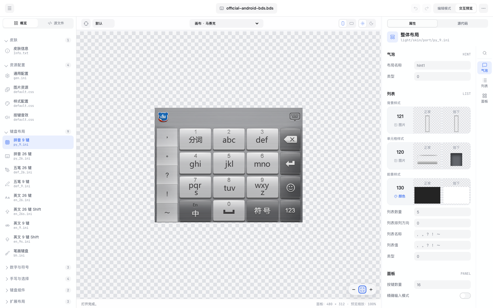
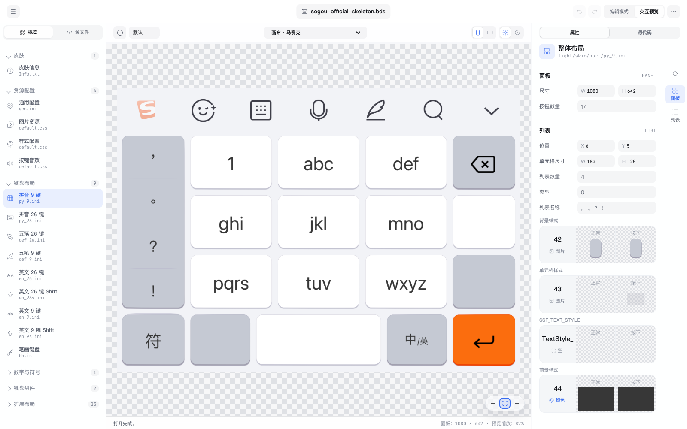
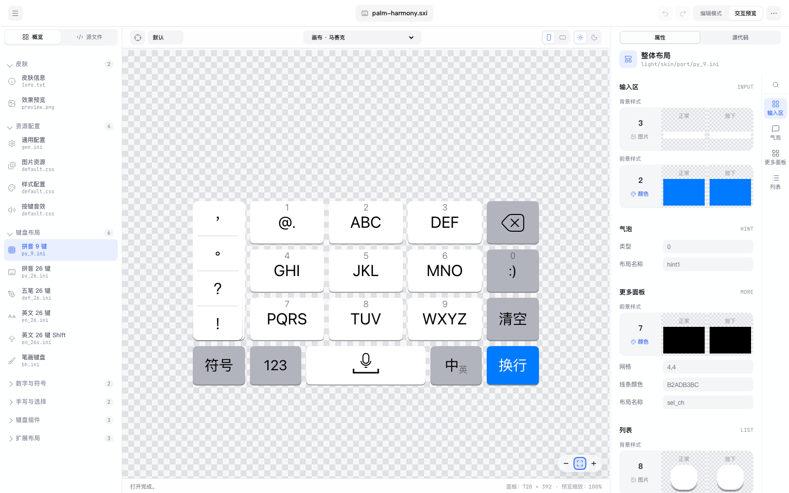

看得见
画布模拟设备、安全区、明暗主题和横竖屏。按键状态、候选栏、工具栏与气泡不会藏在配置文件里。
开源 · 本地处理 · 三种皮肤格式
BdiEditor 把文件、画布和属性检查器放在同一条工作流里。打开皮肤，改视觉，预览横竖屏，再保存或导出。
为什么用它
画布模拟设备、安全区、明暗主题和横竖屏。按键状态、候选栏、工具栏与气泡不会藏在配置文件里。
检查器把位置、尺寸、样式、字体、颜色、动作和资源拆成可读的字段；源码面板保留原始语义。
同格式保存，或在导出前查看降级提醒。未知字段、未改资源和压缩包结构尽量原样保留。
格式地图
先认清“谁负责布局”，再决定从哪里改。下面的边界与当前编辑器实现一致。
.bdi · .bds · .bda布局、按键、候选栏、工具栏、资源、字体与动作BDA 几何来自官方基础布局；BDI/BDS 才能直接改按键排布。.ssf · .mssf背景、按键视觉、文字、候选栏、动画配置与音效搜狗皮肤不含按键位置，检查器只改视觉；加密容器保存后变普通 ZIP。.sxiskin.json、前景样式、图片切片、明暗主题skin.json 是唯一数据源；概览里的布局是只读投影，结构要进源码面板改。三分钟开始
教程从最安全的操作开始：打开、选择、预览、撤销。你可以下载示例皮肤，跟着每一步走。
完整教程
每个修改都成对讲：先在界面完成同一件事，再在源码里找到它对应的字段。按任务找章节，不按文件名背命令。
不要先改颜色。先确认格式、平台、主题和资源是否完整。
百度：BDA 会按 appearanceConfig 识别 iOS/Android；搜狗：支持普通 ZIP 与 Skin 加密容器；手心：从 skin.json 生成预览。
画布是结果，检查器是改动，源码是证据。三者要互相对照。

皮肤的质感来自资源，也来自资源如何被拉伸、裁切和引用。
[Key_Q]
BACK_STYLE=KeyBg_Default_Latin
FORE_STYLE=KeyFore_Default
TEXT_COLOR=0xFF112233
FG_RECT=0,0,1,0.75完整的皮肤不只有按键：输入区、候选栏、云输入、符号、表情、更多面板和气泡都要验。
res/
*.png · *.9.png · *.wav
1080/status1/
phoneSkin.ini · keys.ini
*.cnd · *.pop · *.css · *.til
info.txt视觉编辑器能预览状态，但它不是输入法引擎。功能码要按格式语义验证。

“导出了文件”不等于“目标输入法能用”。把下载和重开纳入验收。
转换以已建模字段为准；搜狗按键动画、动态背景、平台特有面板和复杂资源可能降级。当前项目的跨格式转换已做预览与像素验证，但尚未覆盖所有真机安装组合。
字段级教程
下面不是格式概览，而是一张可以照着执行的修改清单。每一项都给出界面路径、源码位置、适用格式和检查方法。

所有格式先按这条顺序走，避免改了资源却忘了主题、方向或保存。
界面：左侧“皮肤 → 皮肤信息”，改名称、作者、描述、版本、平台、暗色支持。
源码：百度 Info.txt；搜狗 phoneTheme.ini [General] 的 skin_name、skin_author、skin_version、supports-screens；手心 skin.json.info，包内已有 info.json 时同步。
检查：保存后关闭项目，再从最近文件或源码目录重新打开，确认标题和作者都保留。
界面：画布工具栏切换浅色 / 深色、竖屏 / 横屏、设备和安全区；每次只改一项再截图。
源码：百度按 light/skin/port、dark/skin/land 定位；搜狗按分辨率、status1、status2 与 time.ini；手心按 default、night 下的 port_layout / land_layout。
检查：浅 / 深 × 竖 / 横四张预览都打开，不能用一张主题的资源冒充另一张。
界面：左侧“源文件”浏览配置、图片、字体、音频；点资源缩略图看实际尺寸和透明通道。
源码：百度 res/、布局目录和 .til；搜狗当前外观目录、分辨率目录、default/；手心 light/skin/res 或 light/res、dark/...。
检查：替换资源后搜索引用它的样式，确认文件名、切片号和主题路径都存在。
界面：一组连续的数值拖动、图片替换或 JSON 片段修改应产生一个撤销点；检查器“已改 n · 重置”恢复原值。
源码：编辑前复制对应段落，改完看源码高亮；JSON 解析失败不能当作成功应用。
检查：撤销 → 重做 → 保存 → 重开，四步后的字段、图片和预览一致。
BDI/BDS 是配置驱动的布局；BDA 的官方基础几何与动作部分只读，视觉属性仍可改。
界面：概览 → 键盘布局 → 选择整体布局；改尺寸、背景样式、背景颜色 / 图片、透明度、网格和辅助线。
源码：对应布局 .ini 的 [PANEL]：SIZE、BACK_STYLE、BACK_COLOR、BACK_IMAGE、PADDING、VIEW_RECT。
检查：面板边界、键盘高度、候选栏起点与画布底部安全区没有重叠。
界面：编辑模式选中按键，拖动边缘或在检查器改 X/Y/W/H；多选后用对齐、等宽、分布。
源码：按键节的 POS、SIZE、VIEW_RECT、TOUCH_RECT；F 功能键和 S 状态用 CENTER、SHOW、LONG、SWIPE_* 等动作字段。
检查：九键、全键、数字、符号、英文布局分别验证；点击范围不能覆盖相邻按键。
界面：右侧“背景”样式卡片，分别点“正常 / 按下”，选图片、纯色或透明；背景引用可复制成独立样式。
源码：BACK_STYLE 指向样式号；样式节的 NORMAL / PRESSED 指向资源和切片；颜色背景使用 BG_COLOR，不能同时依赖无效图片。
检查：按下状态真实点击出现；透明背景不能意外露出模板默认图。
界面：“前景”卡片选择文字、图标、语音、删除、Logo 等资源；必要时打开图片切片查看器。
源码：FORE_STYLE、FORE_OFFSET、POS_TYPE、FG_RECT；图片 .til / 切片描述决定裁切和拉伸。
检查：正常 / 按下两个状态的前景都能定位，透明 PNG 的边缘没有被拉伸带吃掉。
界面：“文字”分组改显示字、字体名、字号、正常颜色、按下颜色、描边和对齐。
源码：FONT_NAME、FONT_SIZE、FONT_CLEARTYPE、NM_COLOR、HL_COLOR、TEXT_ALIGN；颜色按 AARRGGBB 读取。
检查：中文、英文、数字、符号和长标签都不裁切；缺字体时确认回退字体。
界面：概览 → 候选栏 / 云输入栏；改候选背景、候选文字、选中文字、分隔线、滚动条、首项间距和输入码。
源码：CAND、SCAND 的 CELL_SIZE、CELL_W、FIRST_GAP、NML_BACK_STYLE、SEL_BACK_STYLE、NML_FONT_STYLE、SEL_FONT_STYLE、HLINE_STYLE、VLINE_STYLE。
检查：空闲工具栏、输入码、候选字、选中候选四种状态，不能只看静态键盘。
界面：选中带长按或划选的按键，在“气泡 / 手势”中设置图标、文字、方向和动作。
源码：HINT、BAR、DRAW 的 ICON_UP/DN/LT/RT、ANCHOR_TYPE、PERSIST、OFFSET、TOUCH_RECT。
检查：上 / 下 / 左 / 右滑和长按分别触发，空配置不会显示假图标。
界面：概览 → 工具栏、Logo 菜单、表情、更多面板；逐项改图标、颜色、间距、显示状态。
源码：SWITCH、LOGO、EMOJI、MORE、LIST、BAR；字段包括 ICON_NUM、ICON_INDEX、BACK_ICON、ARROW_ICON、SYM_LAYOUT、NAMES / VALUES。
检查：工具栏图标顺序、菜单打开 / 关闭、表情面板和符号布局都重新打开一次。
界面：“动画 / 音效”分组选择现有动画、按下 / 显示事件和包内音频；编辑器预览展示配置，不承诺播放全部动效。
源码：ANIM_STYLE、PRESS_ANIM、SHOW_ANIM、EVENT1、ANIM_NUM、CATEGORY、LIFE、EMIT_REGION、PARTICLE_IMAGE；音效引用写在对应声音配置。
检查：资源存在、动画引用存在、保存重开无解析错误；复杂粒子到真机再验。
界面：打开 BDA 后可改图片 ID、字体、字号、文字颜色、包内 PNG；面板几何与功能动作按官方基础布局只读。
源码：protobuf 配置、appearanceConfig、面板和资源 ID；不要把 BDA 当成普通 INI，也不要声称所有字段可写。
检查：iOS / Android 外观分别保存并重开，未知 protobuf 字段仍被保留。
搜狗包没有按键坐标；教程里的“布局”指选择官方键盘类型，不是拖动按键。
界面：打开普通 ZIP 或 Skin 加密容器；在概览选择分辨率、白天 / 夜间外观和键盘类型。
源码：phoneTheme.ini、可选 time.ini、1080/status1/phoneSkin.ini、keys.ini、anim.ini、default/sound_android.ini；MSSF 打开后按 SSF 保存。
检查：电脑候选窗皮肤应被拒绝；缺少的深色资源不能凭空生成。
界面：不选按键时，在“键盘背景 / 候选栏 / 输入码”分组改颜色或图片。
源码：[RootView] BG_STYLE / BG_COLOR / BG_IMAGE；[CandidateView] 的背景引用；BG_STYLE=2 使用纯色，=1 才走图片。
检查：候选栏不会被 RootView 和 CandidateView 重复绘制。
界面：选中 Q、空格、删除等按键，在背景卡片改共享样式或点“单独设置”；正常 / 按下分别选图。
源码：[Key_Q] BG_IMAGES=SMA_Key26Bg_Q；样式中的 NORMAL=26keyq.png,2,96,3,139 四个数字是 left/right/top/bottom 拉伸带，不是坐标。
检查：换成长文字或横屏后，四周固定边缘不变形。
界面：按键“前景”选择图标或透明图，调整正常 / 按下显示。
源码：FG_IMAGES 指向前景段；FG_RECT=left,top,right,bottom 是相对按键的四边比例，和背景拉伸参数不是一回事。
检查：前景始终在目标键内，透明边界不会被误当作键面背景。
界面：改主文字、副文字、输入码、候选文字、选中颜色和符号列；共享文字可点“单独设置”。
源码：TextStyle_* 的 TEXT_COLOR、TEXT_COLOR_PRESSED、TEXT_SIZE、字体引用；CandidateView / CandidateCodeView / 符号列各自有样式段。
检查：拼音九键、全键、14 键、英文、双拼、五笔、笔画、粤语分别选一个布局复核。
界面：改长按气泡背景、偏移、动画引用和音效；选择包内已有声音并试听。
源码：POPUP_BG_COLOR、POPUP_OFFSET_VERTICAL、TextStyle_Popup_Code；动画在 anim.ini，声音在 default/sound_android.ini，名字通常不带扩展名。
检查：动画配置可保存，但画布不播放完整按键动画；声音路径在重开后仍存在。
界面：不能通过检查器增删按键、自由拖动按键或改变官方按键数量；只能选择官方布局并改视觉。
源码：官方 port / land 布局来自 APK 骨架；保留 SSF_SECTION 和 PANEL.SIZE，不要将转换后的百度布局当成搜狗原始布局。
检查：教程截图标记为“官方骨架预览”，不声称已在搜狗真机上无损还原。
概览里的 INI / CSS / TIL 是投影视图；真正的结构、动作、候选、气泡、动画和声音都回到 JSON。
界面：打开 .sxi，从左侧“皮肤信息、效果预览、图片资源、样式配置”进入；切换明暗主题。
源码：skin.json、可选 info.json、light/skin/res 或 light/res、dark/...、preview.png；原生嵌套和编辑器扁平包都会映射到同一 JSON。
检查：保存只写回 skin.json，已有 info.json 同步；不要手工改生成的 INI 文件。
界面：选择拼音、英文、数字、符号、手写、表情、更多面板；切换横竖屏和夜间模式。
源码：default / night 下的 port_layout / land_layout；面板 b、候选 c、气泡 h、emoji、more、list、seg、top_cand。
检查：同一个按键在 s_port 和 s_land 的样式引用是否有意不同。
界面：可以选择按键、预览前景样式和图片切片；几何和动作属性视图只读时，点“源代码”定位 JSON。
源码：按键对象的 id、rect=[[x,y],[w,h]]、hit_rect、values、b.base_b、b.base_f、b.base_s、fix_a；values 区分点击、滑动、显示、长按。
检查：改一个 JSON 片段后，看画布、投影视图和源码高亮是否同时更新。
界面：在“样式”中改前景样式编号；图片选择器里选资源和切片；可新增样式后追加到前景数组。
源码：s_info / s_port / s_land；ss_1 文字和颜色、ss_2 动画、s_2 normal/hl 图片引用、info 切片；normal/hl 写资源名和切片号。
检查：正常 / 按下切片、共享样式和方向样式分别保存并重开。
界面：选候选或气泡对象，预览背景、文字、图标、锚点和偏移；不能把只读布局当作表单字段。
源码：候选 c.cand1 的 rect / insets / gap / i_cell / i_f_b / i_f_f / icon_list / switch；气泡 h.hint1 的 info / icon_info / anchor / offset / size / insets。
检查：候选滚动、选中态、气泡四方向和长按图标在明暗主题下都存在。
界面：动画 / 声音只从现有样式和资源选择；源码面板改 JSON 片段，不覆盖整个包。
源码：s_4 的 path_1/path_2/path_3 声音；s_5 的按下 / 释放 / 显示 / 隐藏 / 长按动画编号；ss_2 的补间、组合和粒子模型。
检查：JSON 解析错误不应用；撤销、重做、保存、重开后资源引用仍在。
预览通过只是编辑器证据；目标输入法安装和输入行为是另一项验收。
界面：保存 → 等待成功状态 → 关闭 → 从源码目录重新打开。
源码：比较保存前后的主配置、资源清单、未知字段、压缩条目顺序和修改标记。
通过条件：同一个字段、图片、字体和音频引用都能回到原值或新值。
界面：导出菜单只显示当前格式可用目标；确认降级清单再下载。
源码：搜狗 / 手心到百度以模板和投影视图转换；不支持搜狗与手心直接互转；BDI/BDS 不直接导出 BDA。
通过条件：导出文件重新打开，检查布局、主题、按键集合、候选、工具栏和资源。
界面：截取浅 / 深、竖 / 横、九键 / 全键、候选 / 气泡的关键截图，和源文件一起保存。
源码：记录导出格式、模板、分辨率、被降级字段和资源缺失项；不要把预览像素测试写成真机结论。
通过条件：在目标百度、搜狗或手心输入法安装，测试点击、滑动、长按、候选和声音。
跟着做
样本来自当前项目的公开模板，适合练习打开、检查、保存和重新打开。
继续深入